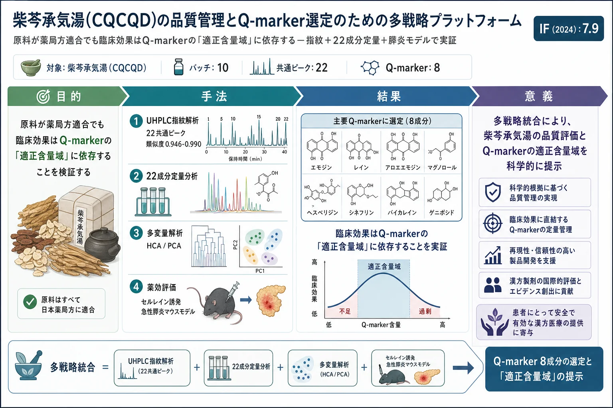

柴芩承気湯(CQCQD)の品質管理とQ-marker選定のための多戦略プラットフォーム

<!-- 方針: ほぼ全訳＋必要に応じた補足。原文構成に沿って訳出。「> 補足:」は訳者注。 -->
書誌情報
- 原題: A multi-strategy platform for quality control and Q-markers screen of Chaiqin chengqi decoction
- 著者: Ge Liang, Jingyu Yang, Tingting Liu, Shisheng Wang ほか（四川大学華西医院 中西医結合科／四川省膵炎センター ほか, 中国。Lihui Deng・Dan Du・Qing Xia が責任著者）
- 掲載: Phytomedicine 85 (2021) 153525. https://doi.org/10.1016/j.phymed.2021.153525
- インパクトファクター: 約7.9（Phytomedicine, JCR 2024 / Clarivate。出典により6.7〜8.8と幅があり要確認）
- 受理経過: オンライン公開 2021-02-20
補足: CQCQD = 柴芩承気湯（Chaiqin chengqi decoction。大承気湯 DCQD を基礎に発展した方剤）。AP = 急性膵炎、SAP = 重症急性膵炎、CER = セルレイン。Q-marker = 品質マーカー。本論文は分析化学＋ケモメトリクス＋in vivo薬効を統合した研究論文。
要旨（Abstract）
背景: 急性膵炎(AP)は罹患・死亡率の高い膵の炎症性疾患。CQCQDは華西医院で数十年AP治療に有効と実証されてきたが、多数の植物化学成分を含むため頑健な品質評価が課題。
目的: 多戦略分析法でCQCQDの品質一貫性を評価し、薬物特性・薬効特性に基づいて潜在的Q-markerを同定し、世界的に受容される医薬として確立を目指す。
方法: 構成生薬を中国薬局方に従い分析。抽出工程を 直交配列 L9(3⁴) で最適化(液固比・浸漬時間・抽出時間・抽出回数の3水準)。UHPLC指紋と多成分絶対定量＋類似度・階層クラスタリング(HCA)・主成分分析(PCA)で 10バッチ を評価。AP治療の基本特性の系統解析から、化学マーカーの品質伝達と薬効を通じて潜在的Q-markerを提案。UHPLC-Q-Orbitrap MSと セルレイン誘発APマウスモデル(臨床等価用量)で品質評価バッチを検証。検証バッチと他バッチの定量情報から線形回帰で有効含量を予測。
結果: 原料の化学マーカー・理化学指標は薬局方規格に適合。22の共存指紋ピーク を選定、類似度 0.946〜0.990(D10が最高)。HCAは10バッチを2群(D10型7バッチ・D1型3バッチ)に分類。全10バッチで壊死は60%未満に低減、最良はD10(約40%)。スペクトル−薬効(Pearson)相関で エモジン・レイン・アロエエモジン・ゲニポシド・ヘスペリジン・クリシン・シリンギン・シネフリン・ゲニポシド酸・マグノロール・フィスシオン・シネンセチン 等が抗膵炎活性と相関。D1は臨床等価用量で無効。ナリンギン・ナリルチン・バイカリンはD1・D5・D9で予測上限を超過。
結論: 原料が適格でも臨床効果は Q-markerの適正含量域 に依存する。一次スクリーニングでエモジン・レイン・アロエエモジン・マグノロール・ヘスペリジン・シネフリン・バイカレイン・ゲニポシドが重要Q-markerと判断された。CQCQDの高一貫性バッチ生産に向けた実行可能なプラットフォームを提案する。
1. 序論（Introduction）
APは膵の炎症性疾患で、重症化(SAP)すると多臓器不全を伴い死亡率が高い。CQCQDは大承気湯(DCQD)を基礎に発展し、SAPで腸管運動の改善・全身炎症の軽減が示されている。化学指紋と多成分マーカー解析は生薬・製剤のQCに有力で、Q-markerは薬物特性・薬効に基づく品質指標として規格化の鍵となる。
2. 材料と方法（Materials and Methods）
- 抽出最適化: 直交配列 L9(3⁴)で 液固比・浸漬時間・抽出時間・抽出回数 を最適化。
- UHPLC: Waters BEH C18（2.1 × 100 mm, 1.7 μm）。MS用注入量 1 μL。UHPLC-Q-Orbitrap MS で成分同定・定量。
- 化学計量: 類似度評価・HCA・PCA で10バッチを解析。Pearson相関でスペクトル−薬効関係を解析。
- 薬効モデル: セルレイン誘発APマウスモデル(臨床等価用量)で品質評価バッチを検証。膵壊死等を評価。
- 含量予測: 検証バッチと他バッチの定量情報から線形回帰で有効含量を予測。
3. 結果（Results）
原料・指紋・化学計量
7種の構成生薬(柴胡 CH・大黄 DH・厚朴 HP・黄芩 HQ・茵陳 YC・梔子 ZZ ほか)中の化学マーカー・理化学指標は薬局方規格に適合(例: 茵陳のクロロゲン酸、梔子のゲニポシド)。22の化学マーカー を定量し、UHPLC指紋で 22共存ピーク、類似度 0.946〜0.990(D10最高)。HCAは10バッチを2主群に分類(D10代表の7バッチ・D1代表の3バッチ)。バッチ間で含量変動が大きい成分が存在。
薬効と Q-marker 選定
セルレイン誘発APマウスで全10バッチが膵壊死を60%未満に低減、最良はD10(約40%)。スペクトル−薬効相関(Pearson)で エモジン・レイン・アロエエモジン・ゲニポシド・ヘスペリジン・クリシン・シリンギン・シネフリン・ゲニポシド酸・マグノロール・フィスシオン・シネンセチン等が抗膵炎活性と相関。一方 D1は臨床等価用量で無効。ナリンギン・ナリルチン・バイカリンはD1・D5・D9で予測上限を超過。これらの含量域の逸脱が品質差を生んだ。
4. 考察・結論（Discussion / Conclusion）
原料が薬局方適合でも、臨床効果はQ-markerの 適正含量域 に依存する——これが本研究の核心的知見。一次スクリーニングで エモジン・レイン・アロエエモジン・マグノロール・ヘスペリジン・シネフリン・バイカレイン・ゲニポシド が重要Q-markerと判断された。品質伝達(原料→製剤)と成分−機能相関に基づくQ-marker選定により、CQCQDの高一貫性バッチ生産への実行可能なプラットフォームを提示した。
補足（実務的示唆）: 「原料が規格適合＝最終製剤が有効」とは限らず、有効性は指標成分が“適正な含量範囲”に収まっているかで決まる、という点が実務上重要。単なる下限規格(○○以上)だけでなく、上限・範囲管理(naringin等の過剰も品質差要因)や、薬効モデルで紐づいたQ-marker(エモジン・レイン・マグノロール等)の含量域設定が、ロット間一貫性の確保に有効と示唆される。